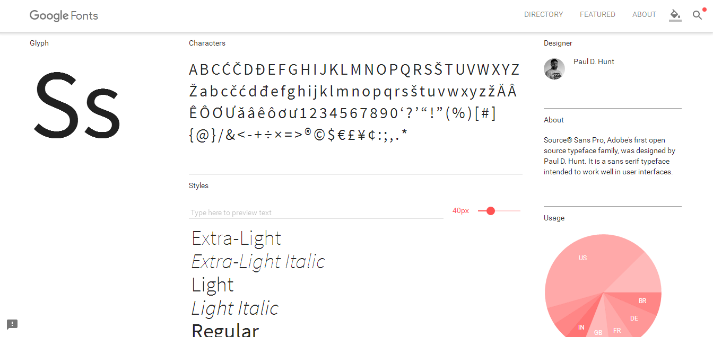
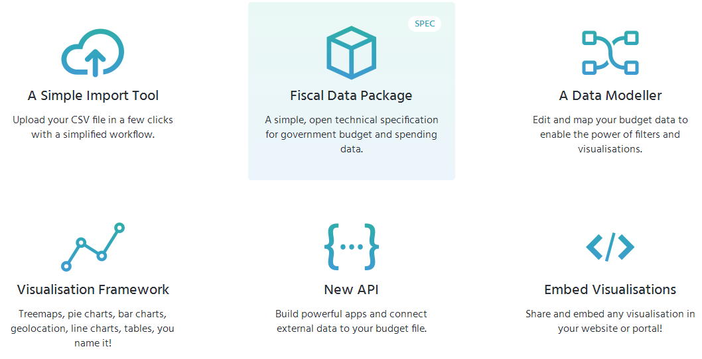
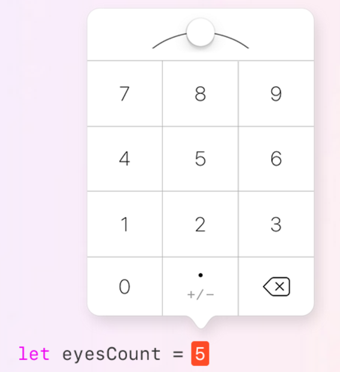

"오픈소스 글꼴, ‘구글 폰트’에서 한눈에"
오픈날리지인터내셔널, 공공 예산 시각화 도구 공개
애플, 스위프트용 어린이 SW 교육 도구 공개
구글이 800여개 오픈소스 글꼴을 한눈에 살펴볼 수 있도록 ‘구글 폰트’ 웹사이트를 개편했다. 사용자는 구글 폰트 웹사이트에서 다양한 글씨체의 종류를 둘러보고 웹사이트에서 글자 크기나 형태를 바로 바꿀 수 있다. 문장, 숫자, 문단 등으로 형식을 바꾸거나 직접 글씨를 입력해 테스트할 수 있는 기능도 제공된다.
 구글 폰트에서 보여주는 글씨는 모두 구글이 직접 제작 것은 아니다. 대신 무료로 이용할 수 있는 글꼴을 모아두고 출처와 정보를 공유하고 있다. 검색 기능도 지원해 ‘세리프’, ‘모노스페이스’등을 적용한 폰트를 필터링해서 찾을 수 있다. 최근 유행하거나 가장 인기있는 글꼴 순으로 정렬해서 보여주기도 한다. ‘피처드’라는 메뉴로 들어가면 구글이 선정한 아름다운 글씨체를 따로 확인할 수 있다.
오픈날리지인터내셔널이 공공 예산 및 재무 관련 데이터를 관리할 수 있는 기술인 ‘오픈스펜딩 넥스트’를 공개했다.

오픈스펜딩넥스트는 ‘웨어더스마이머니고’ 서비스에서 확대된 프로젝트다. 오픈날리지인터내셔널은 오픈스펜딩의 차세대 버전으로 기술을 개선하고 더 많은 사람이 쉽게 공공 예산 데이터를 공유하고 활용할 수 있게 지원할 예정이다. 오픈스펜딩 넥스트는 누구나 무료로 사용할 수 있다.
애플이 6월13일 열린 ‘세계개발자회의(WWDC) 2016’ 에서 ‘스위프트 플레이그라운드’를 공개하면서 소프트웨어(SW) 교육 시장에서 입지를 확대했다.
스위프트 플레이그라운드는 아이패드 앱이자 SW 교육 도구로, 프로그래밍의 기본 원리를 배울 수 있도록 도와준다. 소스코드를 입력해서 원하는 애니매이션 캐릭터를 움직이고 문제를 풀 수 있으며, 원하는 작품을 만들 수 있다. 소스코드는 직접 타이핑하는 것이 아니라 자주 사용하는 기능을 클릭하고 드래그하는 방식으로 입력할 수 있게 지원했다.